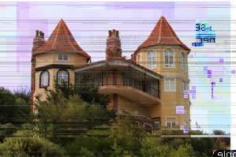
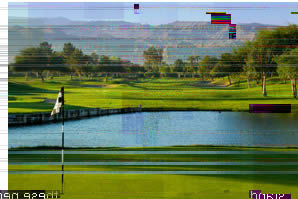

|
|
|
|
|
 |
 |
|
|
Stock Symbol: ANJ -af
Current Price: $61. 22 Change: + $0.15
02/10/0000 04:02 (20 minute lag)
Anglo-Johnson brings together the expertise of two major companies. Our initiatives span t
benefit thousands of employees.
To use real world busi
Anglo-Johnson Ltd. proves that it is possible to not only do business in Africa, but also to imp
life for its workers.
• We are identified as one of 19 stable African Investment Platforms with an S&P
recommendation of BUY.
• We combine traditional natural resource extraction with cutting edge biotech
opportunities.
• Our business model is transitioning to an innovative, sustainable approach via harvesting a natural
renewable resource, thus redu
just good for business, it�s ecologically responsibl
Sales
Diluted Earnings P er Share
6.4% 9.2% 10.5%
21.3% 11.8% 14.6%
Wall Street Investment Magazine says, �Anglo-Johnson stands ready to more
than double its profits in the
coming year. This is a compan
Feel free to arrange a visit to check out Anglo-Johnson. Our five square mile
secure compound can provide
you with a luxurio us stay.
Stay in our Bed and Breakfast.
We will provide safe transportation from Johannesburg to the compound in a
military/freight transport
accompanied by 2 Archangel gunships.
Play golf on our 18 hole course.
We can also arrange a stay at our seaside villa, a secure facility in the emerald zone i
Anglo-Johnson Ltd. is 54% controlled by Cedocore.
Anglo-Johnson Ltd., providing life-saving options for families in South Africa
Stock Symbol: ANJ-af
Current Price: $61.22 Change: + $0.15
02/10/0000 04:02 (20 minute lag)
Anglo-Johnson brings together the expertise of two major companies. Our initiatives span the globe and
benefit thousands of employees.
To use real world business opportunities to address a wide range of profit opportunities and social needs.
Anglo-Johnson Ltd. proves that it is possible to not only do business in Africa, but also to improve quality of
life for its workers.
• We are identified as one of 19 stable African Investment Platforms with an S&P recommendation of BUY.
• We combine traditional natural resource extraction with cutting edge biotech opportunities.
• Our business model is transitioning to an innovative, sustainable approach via harvesting a natural
renewable resource, thus reducing dependence on finite supplies and costly extraction methods. It�s not
just good for business, it�s ecologically responsible.
Sales
Diluted Earnings Per Share
6.4% 9.2% 10.5%
21.3% 11.8% 14.6%
Wall Street Investment Magazine says, �Anglo-Johnson stands ready to more
than double its profits in the
coming year. This is a company that is not just on the rise, this is a whole new business paradigm.�
Feel free to arrange a visit to check out Anglo-Johnson. Our five square mile
secure compound can provide
you with a luxurious stay.
Stay in our Bed and Breakfast.
We will provide safe transportation from Johannesburg to the compound in a military/freight transport
accompanied by 2 Archangel gunships.
Play golf on our 18 hole course.
We can also arrange a stay at our seaside villa, a secure facility in the emerald zone in Cape Town.
Anglo-Johnson Ltd. is 54% controlled by Cedocore.
Anglo-Johnson Ltd., providing life-saving options for families in South Africa